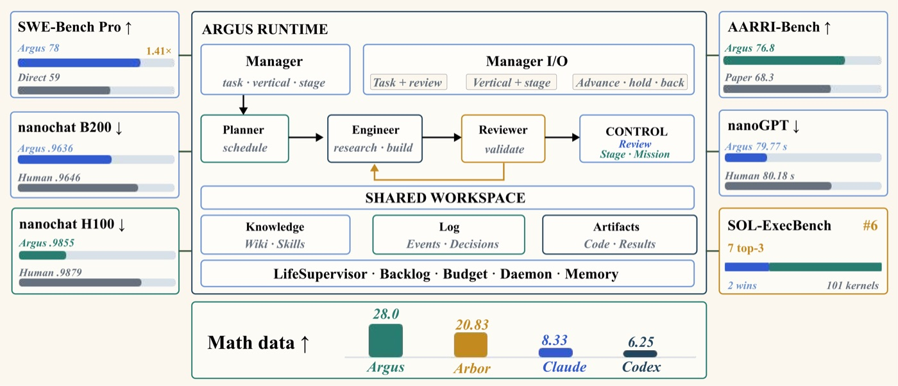

Environmental Feedback Modeling Matters: Rethinking Feedback Treatment in Agentic Hindsight Self-Distillation
first author arXiv 2610.11384 2026
~/hangxi-guo
undergraduate researcher · ai systems / agent runtimes
I work on AI systems and agentic AI. Right now that means heterogeneous computing and midtrain data; before that, agent infrastructure and post-training.
first author arXiv 2610.11384 2026
co-author arXiv 2610.11373 2026
contributor arXiv 2608.05144 Microsoft · SJTU

A self-evolving multi-agent runtime for long-horizon work: Manager, Planner, Engineer and Reviewer hand work to each other through durable project state, so a mission can run for days. I contributed the publication-figure pipeline, daemon reliability fixes, and review-context budgeting.
demo video Argus: A General-Purpose Agentic Runtime for Long-Horizon Reasoningmerged GPU kernels +318 / −2 in 5 files
23 merged pull requests across upstream projects, including the libraries above.
I am a third-year undergraduate at The Chinese University of Hong Kong, Shenzhen (BSc, expected 2028). I am currently conducting research at the SJTU RISE-X Lab with Prof. Yihong Dong, and I previously worked at the TMLR Lab at CUHK-Shenzhen with Prof. Mengnan Du.
Today I work on AI systems, including heterogeneous computing (chips and accelerators) — which has meant shipping kernel-level work upstream — and on data-centric AI such as midtrain data for LLMs. I came to this from agentic AI — specifically agent infrastructure — and from large language model post-training. The question underneath all of it is recursive self-improvement (RSI): how much of an agent's improvement can live outside its weights.
Broader interests: MoE architecture training, agent harnesses, and agent-based 3D generation and diffusion LLMs. Before AI I studied operations research, optimization theory, and stochastic processes — mostly how to reason about a system in terms of what can be measured and verified, which is still how I approach problems.
Open to academic collaborations and research internships. The fastest way to reach me is email.